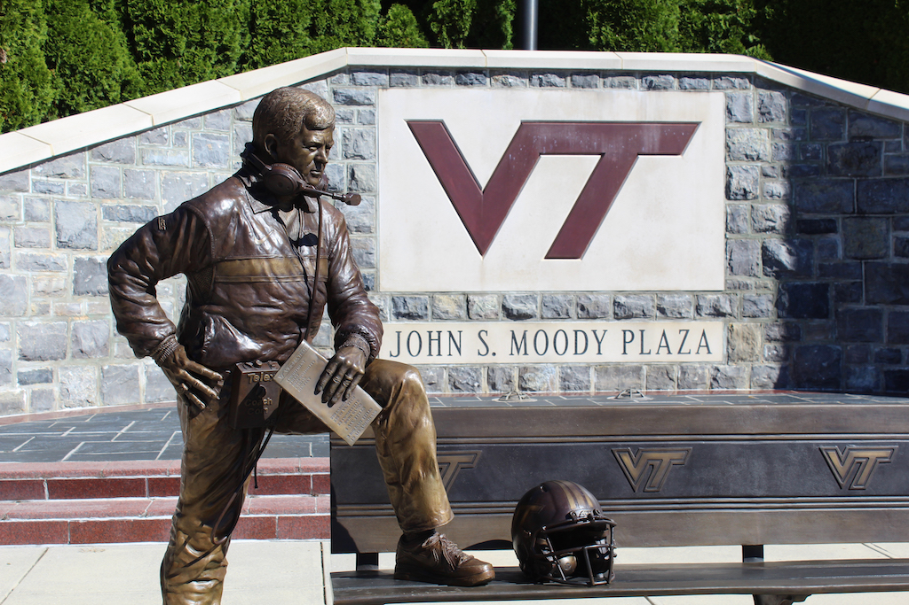
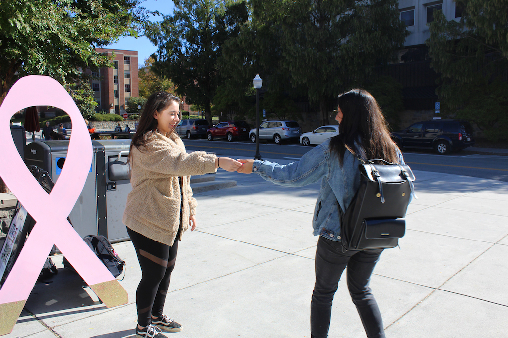
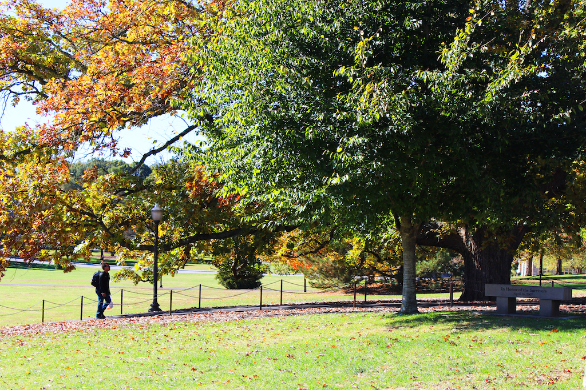
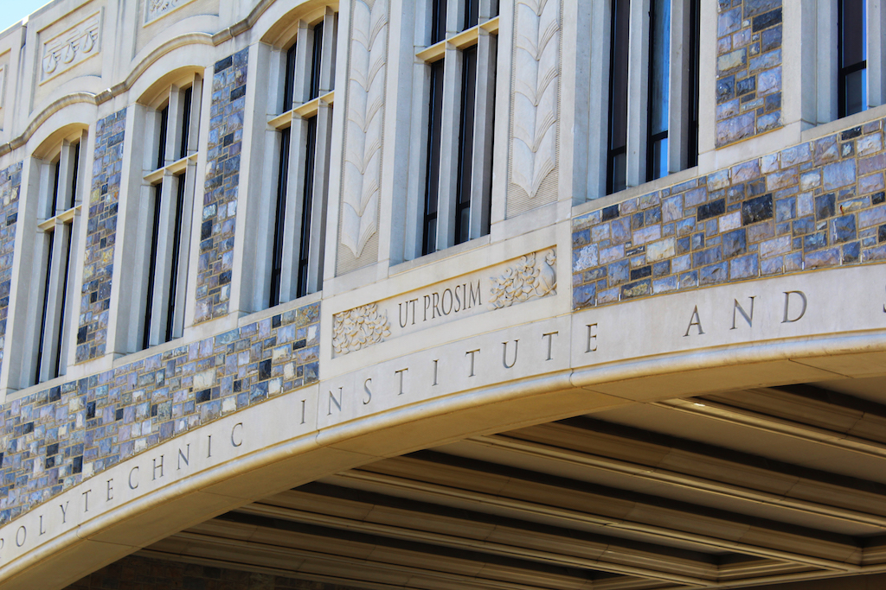
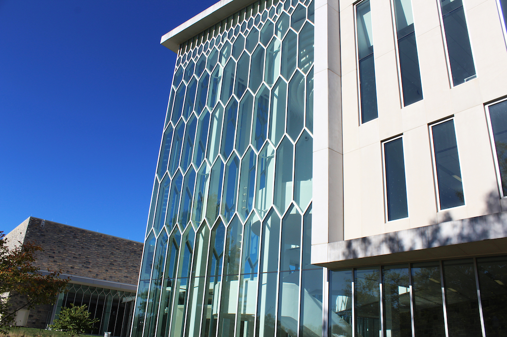

The Pylons
The Pylons represent the eight core values of Virgina Tech's campus. The expectation is that each student actively represent these values daily. The eight values include: Brotherhood, Honor, Leadership, Sacrifice, Service, Loyalty, Duty, and Ut Prosim. The Pylons overlook the Drillfield.
Virgina Tech Sign
This sign is placed at one of the entrances to Virgina Tech's campus. The logo on the sign has the date Virginia Tech was founded, as well as the Pylons.

Frank Beamer Statue
Virgina Tech prides themselves on their athletes. This statue represents former Hall of Fame head coach Frank Beamer, who led his teams to record breaking seasons.
The Drillfield
The Drillfield is a type of hub for campus. Students walk across this almost everyday. It separates the academic and residential side of campus.
Newman Library
This building contains both independent and group study floors. Students often find themselves here often.

Greek Life
Sororities and Fraternities often set up booths on campus to promote their philanthropies. In this picture a girl in Zeta Tau Alpha is given out ribbons to raise awareness for Breast Cancer research.
Burruss Hall
This is one of the most famous buildings at Virginia Tech. It is front and center on the academic side of campus.

A Fall Day
In my opinion, Virginia Tech is the most beautiful in the fall. Walking across the Drillfield surrounded by trees with falling leaves is nothing short of heavenly.

Ut Prosim
Proudly displayed on Torgerson Bridge is Virginia Tech's motto, Ut Prosim. The translation is That I May Serve. Each Virgina Tech student is expected to live each day to serve others, to benefit others.

Moss Arts Center
This is the outside of the Moss Arts Center. It is the hub for performances and guest speakers. One of the newest buildings on campus (opening in 2013) it attracts people because of its modernity.
{kind=link}
{kind=link}
{kind=link}
{kind=link}
{kind=link}
{kind=link}
{kind=link}
{kind=link}
{kind=link}
{kind=link}